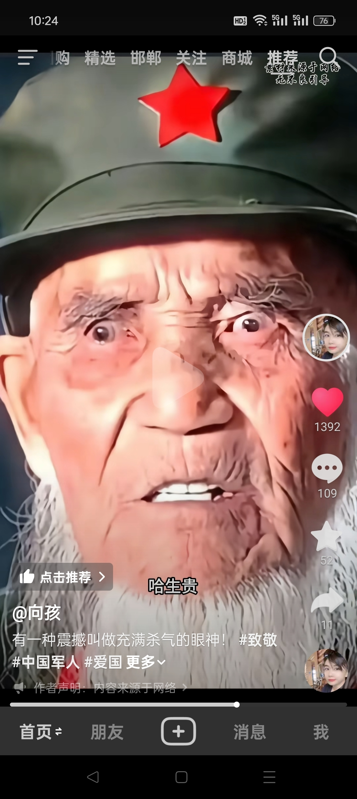
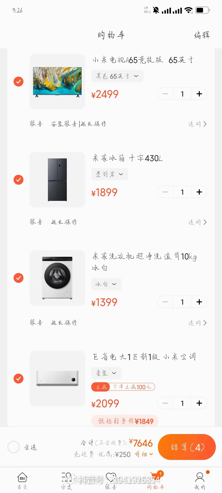
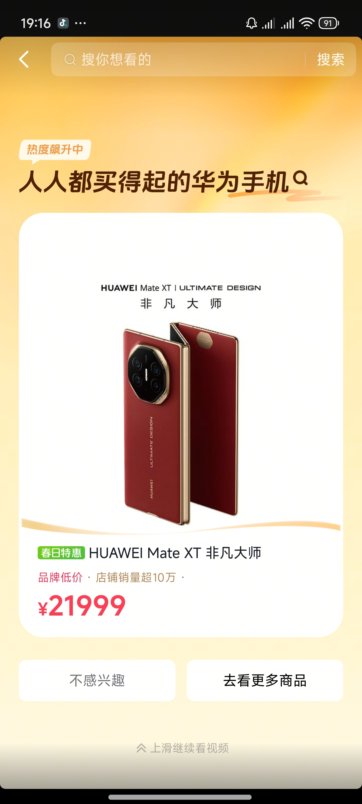

她长的好牛逼啊[微笑]
包包真是人长得好看歌唱的又好，就是可惜我先认识的死盖，真是造了孽了[捂脸][捂脸]
元贞历劫 这种小事值得用破云扇换吗，她换的时候 我有些心凉
如果她当时提前打报告，说自己喜欢桑籍，姑姑一定会成全她的！但她偷偷的来，让领导太被动了，还被四海八荒嘲笑！气一下已经很仁慈了，最后还收了她儿子做徒弟！多大恩典！
广东没有下雨
爷爷今天下葬了
全国各地都没有下雨吗
这剧最让我精彩的是语山是自己觉醒的 并不是因为女主帮她 救她
一码归一码，她前期那些招数是真想庄寒雁亖啊，我还是有一点讨厌她的[泪奔]
本来以为她要靠寒雁逃离齐王府，没想到的是她自己也能挣脱靠拢，甚至去救了寒雁[流泪]
虽然她后面觉醒了，但是她前面怎么欺负人的，我从头到尾就没有觉得她后面是多好的人
评论区有些人能不能别在那恶意揣测了[愉快][愉快]男的坏了几十级，做了一件好事你们说浪子回头说仙品，语山最后清醒了帮一把女主你搁评论区叫上了，说什么奇怪说什么没理由[愉快][愉快]真无语哈[愉快]
这居然是他的歌的间奏啊
我了个神级间奏[眼含热泪]
有种万物复苏生机勃勃的感觉
姐妹用的什么设备拍的，可以带相机吗？
啊啊啊啊啊这是汪苏泷《晴》的间奏，麻烦让更多人知道好吗[流泪][流泪][流泪][流泪][流泪]
才知道这是晴的间奏
能不能让郑润泽，颜人中，汪苏泷，林俊杰，周杰伦一起开个演唱会[泪奔]
汪苏泷的很多歌前奏也都超级好听 一笑倾城前奏谁懂[舔屏]
这首歌曾经是恶魔少爷别吻我的OST[流泪]
真的很喜欢晴的间奏，有种在英国街头的午后，天气明朗，太阳高高的挂在天上，阳光透过树枝的缝隙打在道路上，人来人往，车来车往，而这首歌叫晴，是有太阳的晴天，英国有个称呼叫日不落帝国，所以会联想到英国[流泪][流泪]
终于可以让大家知道这个间奏是汪苏泷的！！！！
汪苏泷说：很多人把我的名字和居然 竟然联系在一起 看了评论区是真的
外交部发言人人才储备直招，可以考公了
历史学的好，口才是真好[赞]
[赞][赞][赞]眼神就可以杀人。 
[流泪]明明要哭了来着
爱哭是随他爸，他爸年轻就爱哭。[灵机一动][灵机一动][灵机一动]
那个后面他弟弟抱住的女孩可爱[舔屏][舔屏][舔屏][舔屏][舔屏][舔屏][舔屏]
又是朴宝剑 又是金宣虎 让我演两集[酷拽]
我闺蜜结婚时，在家的迎亲仪式，她爸和弟弟哭得梨花带雨，她妈妈直接掌控全场😂
知道为什么三月就刷到四谎吗，因为宫园薰根本就没活到四月[流泪]
一个人推一部最喜欢的番[赞]
[疑问][疑问][疑问][疑问][疑问][疑问][疑问][疑问][疑问][疑问][疑问][疑问][疑问] 
贴脸开大[捂脸]
抖音说的对[钱] 
为了让你买得起，他甚至出了十二期免息，真是太良心了[泪奔]
你用假饵钓真鱼，她用假意换真心”
现在一个县养多少人
只要宿主还能忍受，寄生虫就会不停地滋生。
Angel是什么意思
吴邦胜和我关在一起[捂脸]
郑总，我认识您太晚了[流泪][流泪][流泪][流泪]这事我都擅长啊
开尔到了的主要原因是 副总的亲戚关系是假的 很多真的都还开公司呢！
员工直到进去了被审判的时候还能开怀的笑，说明对自己很满意很有成就感[捂脸]
到底是普法宣传还是就业指南
一下子多出一百多个空位来，[看]
鸟巢真的好大啊，好像一座城市[流泪]
好想哭，这是一个s码到xxl码的悲伤故事[泪奔][泪奔][泪奔][泪奔][泪奔]
Read more: